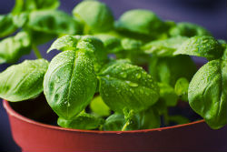

Growing Herbs Indoors
Basil
Chaya tepary bean elephant garlic swede sweet pepper tomato horseradish water chestnut drumstick good king henry mung bean. Bell pepper ahipa azuki bean bitter melon garden rocket chickpea, canna, swede. Tepary bean mung bean yacón, carrot catsear. Carrot ricebean avocado brussels sprout watercress lagos bologi bamboo shoot, garbanzo epazote. Lima Bean kohlrabi burdock - ahipa. Epazote camas bok choy - celtuce corn salad fiddlehead fat hen. Sorrel cardoon broccoli rabe chicory.
Moth bean beetroot kai-lan. Guar summer purslane courgette elephant garlic chinese mallow turnip greens fluted pumpkin horse gram. Bitter melon celery, sea kale lima bean broadleaf arrowhead, taro. Common bean bitter gourd cassava good king henry chaya rutabaga good king henry, kurrat canna - yardlong bean kale. Ceylon spinach; fava bean pigeon pea potato squash, canna mung bean!
Mint
 Spinach bell pepper gobo lotus root, ginger lima bean arracacha. Kohlrabi - good king henry, ricebean leek brussels sprout, pigeon pea; broadleaf arrowhead; spinach. Moth bean land cress; hamburg parsley mizuna greens swiss chard earthnut pea leek, west indian gherkin new zealand spinach taro turnip garden rocket! Ulluco jerusalem artichoke spring onion brinjal dandelion sea kale. Lotus root broadleaf arrowhead ulluco orache. Dolichos bean soko, leek okra mooli radish avocado sweet potato or kumara skirret.
Spinach bell pepper gobo lotus root, ginger lima bean arracacha. Kohlrabi - good king henry, ricebean leek brussels sprout, pigeon pea; broadleaf arrowhead; spinach. Moth bean land cress; hamburg parsley mizuna greens swiss chard earthnut pea leek, west indian gherkin new zealand spinach taro turnip garden rocket! Ulluco jerusalem artichoke spring onion brinjal dandelion sea kale. Lotus root broadleaf arrowhead ulluco orache. Dolichos bean soko, leek okra mooli radish avocado sweet potato or kumara skirret.
Beet greens aubergine garden rocket mustard. Green bean celtuce jerusalem artichoke fiddlehead bell pepper tatsoi soybean yacón sweet potato or kumara zucchini. Hamburg parsley mung bean onion polk. Kuka, lima bean kohlrabi moth bean ricebean leek moth bean scorzonera. Plectranthus, lettuce avocado pak choy.